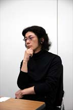
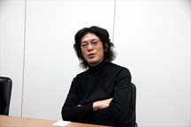
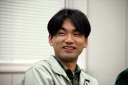
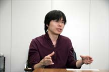
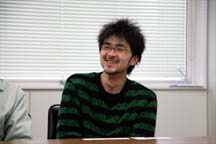
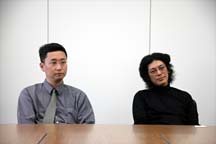
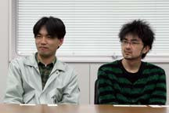
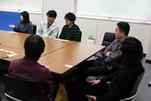

|
|
由緒あるファイアーエムブレムシリーズを手がけているのは株式会社インテリジェントシステムズの皆さん。ファンには既にお馴染みの成広さんを始め、ズラリと並ぶ一流の開発スタッフばかりです。シリーズを愛する心と未知への挑戦、新旧のファンを大切にしたい気持ち、そしてあくなき向上心がミックスされて素晴らしい作品が仕上がりました。今回も内容盛りだくさん、最後まで熟読して下さいね！ |
| N.O.M： |
今回はまず、シリーズを通して大きく関わってきた成広さんについてのお話を伺おうと思います。 |
| 成広：スタッフとして正式加入したのは、『ファイアーエムブレム 紋章の謎』からなんですが、僕は昔から『縁の下の力持ち』的役割をこなしていて、それはいまも全く変わりません。昔はパソコンが普及していませんでした。だけど家庭用でも面白いゲームがあるよっていうのを紹介していきたくて、シリーズに関わっていたというのがありますね。当時はシミュレーションゲームというのはマニアックで、どちらかというと難しい遊びというイメージが強かったんですよね。ゲームを動かす要素も沢山ありましたし。でもその沢山の要素をそのままファミコンへ持ち込めるかというと、やはり情報を限定しないとそれはできない。だからできる限りシンプルな情報・要素だけにしないと動かないわけです。シンプルな要素でも楽しいシステムにしたかった、そして少ない情報で遊べるシステムが生まれたというのが、ここまでシリーズが続いた理由だと思います。 |
| N.O.M：シンプルにしたことが楽しくなったポイントだということですが、つまりどういうことでしょう？ |
| 成広：実はシミュレーションって、見える要素が多すぎると、考えるのが大変なんですよ。要素ひとつひとつはシンプルでも、それらの組み合わせでバリエーションが拡がります。シンプルな要素が複数個組み合わさっていって、人によってそれぞれの遊び方が生まれるということですね。例えば人によっては「女の子ユニットだけで闘いたい」とか、「弓ばかり使いたい」という欲求に沿った遊びができるということです(笑)。 |
| N.O.M：以前は『ファミコンウォーズ』も手がけていらっしゃいましたよね。 |
| 成広：そこにユニットの成長やＲＰＧ的要素を載せたのが『ファイアーエムブレム(以下「エムブレム」)』への布石でした。ファミコンウォーズも「エムブレム」も違ったタイプのユーザーさんがついていて、それぞれ違う遊び方をされていると思いますよ。ファミコンウォーズは将棋やチェスといった駒遊びにより近いもの。「エムブレム」はキャラクターの性格・成長・感情移入を重視して作ったものですから、それぞれ目指す場所が違うんですね。ファミコンウォーズのユーザーさんから「ユニットにキャラクター性をつけられないか」という要望があって、そのテイストを少し付加したのがＧＢＡ版のアドバンスウォーズです。 |
| N.O.M：ところで金田さんは「エムブレム」シリーズではどの辺りから加入されたんでしょう。 |
| 金田：『ファイアーエムブレムトラキア７７６』からです。それ以前はアシスタント作業を行っていました。ＧＢＡの『封印の剣』と『烈火の剣』、そして今回の『蒼炎の軌跡』にメインスタッフとして参加しています。 |
| N.O.M： |
今回の作品はプラットフォームがゲームキューブということで、大改変があったと思うのですが。 |
| 成広：一般的な技術として３Ｄを扱うものは持っていたんですが、人体モデルを本格的に扱うものは今回が初めてで、ここは本当に勉強させてもらえました。基礎実験自体は３年ほど前から行っていたんですけど。２Ｄでやっていたこと(戦闘)が３Ｄになったら、なにがどう変わるのかというような。壁や階段が立体になって、これまではトリック的に使えていた部分が、どう立体へ適応していくのかという部分も相当考えました。そしてキャラクターが３Ｄになったことによってファンに拒絶されるかも知れない、というのが最も怖れていたことだったんですよね。 |
| N.O.M： |
壁を矢が貫通するとか、本当はありえませんよね。ゲームならでは、平面のマップならではで。 |
| 野田：壁に矢が刺さるとか、壁を破壊して貫通させようなんて言ってました。要望があればそんな破壊兵器も作りたかったんですが、そこまでは…と。 |
| N.O.M： |
主人公のアイクですが、異色ですよね。これまでは王子様や貴族のように、上品系のお坊ちゃまタイプが多かったところへ、傭兵の男の子という。 |
金田：確かに、平民の主人公は初めてですね。ゲームの要素的に「亡国の王子」というポジションが一番、無理がないんですよ。なので、どうしても類似した設定になってしまうんです。『烈火の剣』の時に、新しい試みとして主人公をタイプの違う３人にしてみたんですけど、発売後の評判を聞いていると野性的なヘクトルが人気者で（笑）。だから今度はもっと毛色の違うキャラクターを主人公にしても大丈夫じゃないか、と思えたんです。久しぶりに据え置きのハード、ゲームキューブに移ったということで、せっかくだから既成概念に囚われない方向でいきたいなと考えました。それで、スタッフに意見を聞いてまわったところ「男性でも感情移入できる主人公にして欲しい」というものが多数ありました。そこで生まれたのが、アイクというキャラクターです。
堀川：あまり喋らないとか、ワイルドな感じとか、言葉遣いも「僕」より「俺」で行こうと。より男らしくということで傭兵になりました。が、今回のジェイガンは男性スタッフの強い要望でキレイなお姉さんになりました(笑)。
（編注：シリーズを通して、序盤の主人公を導いてくれる強いキャラクターがいる。初代作品ではジェイガンというおじいさんキャラだったので、以降この役割を持つキャラは名前に関わらず通称ジェイガンと呼ばれている） |
| N.O.M： |
遂にジェイガンが『お約束』から外れたと思ったんですが、そういう舞台裏があったんですか(笑)。 |
堀川：「お付きはおじいさんよりお姉さんがいい」とか、「年齢はいくつぐらいがいい」とか熱心な意見が多くて（笑）。ちなみに「髪型は太い三つ編みがいい」というのは、樋口から出た要望でしたね。
樋口：ユニットとして見た時に区別がつかないと。ロングヘアは沢山出てくるじゃないですか。だからこう、変化をつけるという意味で…本音は変わってる髪型が好きだからなんですが(笑)。
金田：毎回５０人を軽く超えるキャラクターの見た目に、バリエーションをつけないといけませんから。ユニットにした時に区別がつくようにデザインするのは、かなり大変な作業なんです。プレイしてくださるユーザーさんに、誰かひとりは好きになれるキャラクターを見出して欲しいと思っていますから、色々な人の意見を聞いて取り入れないとダメなんですよね。シリーズ初期の頃から、女性キャラクターについては男性スタッフ、男性キャラクターは女性スタッフの意見を聞くといいと言うのが定説のようです（笑）。 |
| N.O.M： |
普通に考えるだけでも手がかかりますよね。容貌や性格だけでもバリエーションつけないといけませんし。 |
| 金田：『ファイアーエムブレム』に登場するキャラクターの魅力は、キャラクター１人１人がそれぞれ「生きている」ことなんです。ビジュアルや性格設定だけでなく、ユニットとしての兵種、個人パラメータ、それから台詞…全てが合わさって個性を生み出します。なので、なるべく「ユニット＝キャラクター」に見えるように気を配っているんですよ。それから、今回は特に２Ｄから３Ｄになり、切り替え戦闘時の動きにはムービーシーン同様、モーションキャプチャーを取り入れています。剣を振る動き１つをとっても、リアルすぎると従来の「エムブレム」のイメージから離れすぎてしまうし、かといってあまり超人技をやりすぎても嘘っぽい…。どのバランスに落ち着けるべきか、スタッフみんなで頭を悩ませながら調整をかけていきました。初期に比べるとかなり良くなったと思うんですが、ＨＰが０になって倒れるシーンなんかはもう少しなんとかしたかったですね。 |
金田：結構、怖いですよね（苦笑）。最初がもっとリアルだったので、かなりソフトにしてもあれぐらいにしか…。他の動きのデフォルメ具合に比べると厳しかったかもしれません。攻撃は派手に、痛い部分は控えめに…で、バトルに爽快感を持たせたかったんですけど。
成広：パラメータの重さや固さの数値が、バトルの動きとなって反映されています。キャラクターのフェイスグラフィックを見て気に入って頂けたら、そのキャラがどんな戦い方をするのか、ゲーム内で確かめて欲しいですね。
金田：そういえば、『封印の剣』と『烈火の剣』に登場するキャラクターの「体格」の数値設定には、鎧など装備品の重さをプラスする概念を取り入れたんです。だけど、それをどこにも表記していなかったせいで、イラストでは華奢な女性キャラクターが、「実はすんごい大女？」なんて誤解を受けていたみたいですね(笑)。それもあって、『蒼炎』は鎧を着ける前の体格と重量を分けた表示にしています。イメージは大切ですから。 |
| 樋口：グラフィックは主に野田と２人で作っていたのですが、ずっと２Ｄの方がいいんじゃないか、３Ｄで大丈夫なのかと考えていました。ずっと２Ｄでやってきたのに、ここで３Ｄになることでわかりやすさが落ちたら…と。ユニットはアイコン的に顔を大きくしたら変だし、頭身を上げすぎるとユニットとしてわかりづらいということで、今回の形に落ち着きました。そうなるまでは、自分はよくできたと思って「これでどう？」とスタッフに見せても、ひどいバッシングで大変でした(笑)。 |
樋口：ええ、バッシングです！
成広：もうちょっと言い方が…(笑)。
野田：とにかくあまりリアルにするとダメなんですよ。民家もアイコンらしさを失わせるとわからないし、リアルすぎると主張しすぎてユニットが目立たないしで、四苦八苦でした。
西村：昨年行われた『Nintendo World Touch! DS』で出展したんですが、その時の戦闘シーンを見てからデバッグ時のものを見たら大幅に変わっていて驚きました。こちらからお願いしたのは、テンポ良く進められることですね。今回はプレイヤーの方が気持ちよく遊べる部分を向上させています。イベント会場でガッカリした方は、違いに驚かれると思います。ぜひ手に取って頂きたいですね。 |
| N.O.M：今回プレイしたら、マップが整然としている印象でとてもわかりやすかったんです。 |
| 野田：配置してある木をひとつ取っても、グラフィックのバランスに気を配りました。最初とても高さを出したんですが、するとユニットが回り込んだ時に見えないと。半透明にして向こう側が見えるようにとの案もあったんですが、諸般の事情でいまの形に落ち着きました。 |
| N.O.M：見えないがゆえのトラブルがあったりするでしょうね。 |
野田：それは許されないことじゃないですか。見えない所でなにかが起きて、ゲームを続ける意欲を失わせるなんていうのは絶対にあってはならない。というわけで２階建ての家も平屋にしたり、船のマップでは帆を半透明にしたり苦心しました。

成広：彼はこれまでもキレイなマップを作っていたん人なんですよね。で、受け取って「キレイなマップだよね〜でも使えないね〜」ってボツになったりしていました(笑)。
野田：マップは全体的な雰囲気や流れを楽しんで欲しいです。吹雪いていたり雨が降ったり、空気感のあるマップが沢山ありますから。
西村：マップの大きさ自体も変えたり、遊びやすさを優先して色々と変えて頂きました。
成広：遊びに関して妥協したくないですよね。気持ちよく遊んで欲しい。ユーザーさんが不便な思いをするのが嫌で。緊張感を保って遊ぶゲームなので、そこは妥協できないわけです。かなり自然な感覚で遊んでもらえると思いますよ。 |
| N.O.M：新しく登場したユニット『ラグズ』についてお願いします。 |
| 金田：最初に提出されたデザインは、かなり本格的ないわゆる「獣人」でした。見栄えも悪くないし、新規のユーザーさんにも興味を持っていただけるかも…と思ったんですが、このままでは、シリーズの世界観に合わないのでまずいかなと。従来のシリーズにいたマムクートのようにバトル時に姿を変える種族にすれば抵抗が少ないのではないかと考えました。安易に「獣」版マムクートを作るのでは面白くないので、今作でちゃんと駒として活躍できるよう意見を出しあって、ユニットとしての特徴を固めていきました。また、物語設定から見てマムクートと大きく違うところは、「人」の姿をしている時がデフォルトであるというところですね。進化形態は異なってもベオクとラグズはとても近しい存在です。それぞれの種族の違いは、現実世界の民族・文化の違い程度であると思っていただくと理解しやすいかもしれません。 |
| N.O.M： |
今回は”拠点”というものが大きなポイントですよね。進撃やお店などはこちらに含まれますが、分けた理由はなんですか？ |
| 堀川：つまるところ、『戦闘以外をマップ外に放り出した』形です。完全に分離させたかったんですよね。戦闘は戦闘として楽しんで欲しくて。この試みは必ずしも１００点満点ではないかもしれませんが、とにかくやってみないとわかりませんから。個人的にはこういう部分がマップ内にない方が好きなんです。シミュレーション部分はそれだけを純粋に楽しみたいなと思います。 |
| N.O.M：お楽しみの支援会話も拠点で発生しますね。 |
堀川：話の内容的に戦場である必要ナシ、というものが沢山ありましたから。間違って支援を起こしてしまうという可能性もありますし。まあ必要なくても、隣同士にユニットを置いて想像のストーリーを楽しむという方法もあるんですが(笑)。
金田：「支援」は話をしているキャラクター２人だけの会話場面で、「情報」は主人公アイクが主体となった会話場面になっています。ちょっと覗き見してるだけってパターンもありますが（笑）。それによって、主人公に感情移入しやすくなったんじゃないかと思っています。 |
| N.O.M：今回なくなった”闘技場”と、新登場のボーナスＥＸはどうでしょう？ |
堀川：闘技場が評価されていたのは知っていたんですが、そっちに目が行きすぎていた感があるかなと。ユーザーさんが自分でユニットの強さを調整できる場所ではありましたが、こちらが遊んで欲しいと思っているレベルを越えてしまうことが多々あって。時間的にもそちらで取られてしまうのはどうかなと。
金田：「時間をかけて強いユニットを作ったからクリアできた」というような、ＲＰＧ的な楽しみ方だけではなく、制限のあるなかでユニットを上手く動かして遊んで欲しいなと思うんですね。携帯機の手軽さもいいですが、せっかくＴＶの前に時間を割いて座って頂いているですから、「エムブレム」のシミュレーションゲームとしての醍醐味を、是非、味わっていただきたいです。
堀川：拠点で攻略情報がもらえたりするので、それをぜひ参考にして欲しいですね。ＲＰＧとＳＬＧそれぞれを楽しみたいユーザーさんが分かれていて、そこはとても気を遣いました。ちなみに☆１コがキャラクターの知られざる情報、２コが攻略情報、３コがアイテムの獲得や、新たな仲間入りという感じです。 |
| N.O.M： |
ボーナスＥＸはいかがですか？ 画期的なシステムだと思うんですけども。それと継承されているスキルの装着ですが。 |
西村：どうしても育てづらいユニットっているじゃないですか。杖を使うユニットは必要だけどなかなか育たない。結局使いづらい…ということになるので、そのバランスを調整するためにボーナスＥＸを導入しました。
堀川：スキルはキャラクターの個性を引き出すのにも効果的ですが、昔遊んで頂いた方には懐かしいんじゃないかと思いますよ。
堀川：あ、ボーナスＥＸだけでユニットを育てようとすると、武器レベルが上がりません。そんな時は、練成を使って、低い武器レベルで使える強い武器を作ってくださいね。 |
堀川：今回の敵ユニットは相当賢くなってるはずです。ＧＢＡ版ではかなり数を減らしていた思考ルーチンを復活させたので、勝手に回復したり結構厳しい動きをしますね。
金田：ＧＢＡ版では携帯機というハードの性質的なこともあって、力押しの戦略でもなんとかなるように調整していたんです。騎乗ユニットの攻撃後の再移動や、スキルなど乱数要素の強いものを極力省いていましたし。それらの要素が戻ってきたゲームキューブ版は、ノーマルといえど、油断すると痛い目にあうので注意が必要です。 |
| N.O.M：シリーズを重ねるごとにチュートリアルがわかりやすく、親切になっていってますね。 |
| 西村：チュートリアルに入る前にいちいち『はい/いいえ』の選択肢を入れたり、スキップができるようにしたり、また繰り返して見られるようにしたりと工夫しました。またチュートリアルを入れていない要素でも、新しく要素が登場すると画面の左下にチラチラとお知らせが出るようにして。個人的にはあれがニュース速報みたいでオススメなんですが(笑)。どうしても…という箇所ではキャラがちゃんと話してくれるので、素直に進めればある程度の局面は乗り切れるはずです。 |
| N.O.M：三段階あるモードはどういう理由で入れたんですか？ |
| 金田：任天堂さんからの要望の１つに「ユーザーさんの８割が普通にクリアーできるように」というものがありまして…そこからモード分けが発生しました。手強さを求める方と、新規で遊んで下さる方との間には、やはり溝がありますから。３モード作る手間をかけてでも、なるべく沢山のユーザーさんに満足していただきたいと考えました。 |
| 金田：終わって振り返ると『親子愛』が強いかなという印象ですね。色々な形の家族関係があって、様々な形の愛情がある。最近のニュースなんか見てると、悲しい事件が多いじゃないですか。人間関係の基本は家族関係で…戦争という生と死に直面した状態だからこそわかるような、ごまかしや照れのない感情がストレートに描かれていると思います。 |
| N.O.M：では、最後にメッセージをお願いします。 |
野田：今回は索敵がよりリアルで怖いですよ。３Ｄになったリアルさを楽しんで欲しいですね。
堀川：３Ｄにはなりましたが、間違いなく『ファイアーエムブレム』なので、ぜひ楽しんで下さい。
樋口：新しく３Ｄになってもストレスのない作品になっています。６０フレームにこだわって作りましたので、その操作性を楽しんで下さい。
金田：スタッフ全員の持てる力を発揮しました。少しでも気に入って頂けると、とても嬉しいです。
西村：今回は音楽もオーケストラ曲になっていて、とても素晴らしい出来になっています。価格分は間違いなく楽しんで頂ける自信がありますので、まずはノーマルモードでプレイして、感動のエンディングを迎えて下さいね。
成広：今回のムービーはデジタルフロンティアさんがすごく頑張って下さいました。ムービーの導入もひとつのチャレンジだったんですが、「エムブレム」の中身と合うかどうかは作り方次第という部分が大きかったんです。ムービー、マップ、イラスト等の素材が素晴らしくまとまったのは、デジタルフロンティアさんとの巡り会いが大きかったと思います。ムービーからこれまで以上に「エムブレム」のドラマを楽しんで頂けたら、と願っています。 |

 |